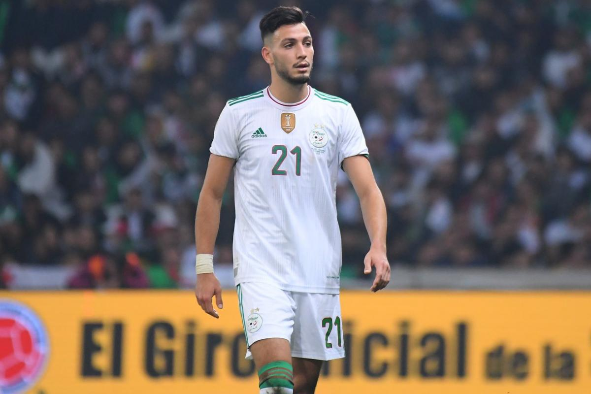

Bienvenue sur la page de Ramy Bensebaini

Biographie
Ramy Bensebaïni, né le 16 avril 1995 à Constantine En Algérie, est un footballeur international algérien, évoluant actuellement au poste de défenseur dans l'équipe du Borussia Mönchengladbach. (Bundesliga)
Carrière en club
2015-2016 - Montpellier
2016-2019 - Rennes
2019-...? - Borussia Mönchengladbach (Bundesliga)
En séléction Nationale
Il a été sélectionné en équipe d'Algérie des moins de 17 ans en 2012 puis en équipe des moins de 23 ans en 2015. Le 8 novembre 2015, lors des éliminatoires de la Coupe du monde 2018 contre la Tanzanie, Christian Gourcuff effectue sa première convocation avec l'Algérie mais ne joue pas. Il a été rappelé pour deux matchs. Qualification CAN 2017 contre l'Éthiopie en mars 2016 . Puis, en décembre 2016, il est convoqué en amical contre la Mauritanie. Le 7 janvier 2017, il est sélectionné pour la première fois face à la Mauritanie. Dans ce match, il est entré en jeu à la 46e minute de jeu, remplaçant Hichem Belkaroui. Le match s'est terminé par une victoire de 3-1 pour l'Algérie. Le 31 décembre 2016, il faisait partie des 23 personnes convoquées par le sélectionneur de l'équipe nationale Georges Leekens pour la CAN 2017, un match au Gabon. Dans cette compétition, il a participé à deux matchs. L'Algérie a été éliminée au premier tour . Le 1er juin 2018, il inscrit son premier but en équipe nationale lors d'un match amical contre le Cap-Vert (défaite 2-3) avec un score de 1-0 Le 30 mai 2019, il faisait partie des 23 hommes convoqués pour la CAN 2019 par le sélectionneur de l'équipe nationale Djamel Belmadi. Le 19 juillet, il a de nouveau affronté le Sénégal lors de la finale de la Coupe d'Afrique des Nations 2019 et l'a emporté 1-0. A remporté la Coupe d'Afrique des Nations, la deuxième de l'histoire de l'Algérie. Dans cette compétition, il a disputé six matchs et réalisé la passe décisive contre la Côte d'Ivoire.